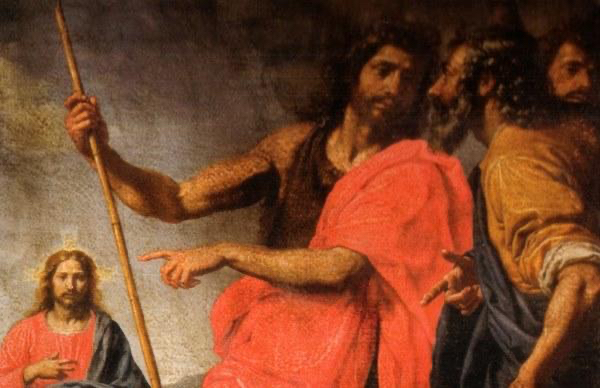
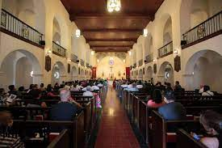
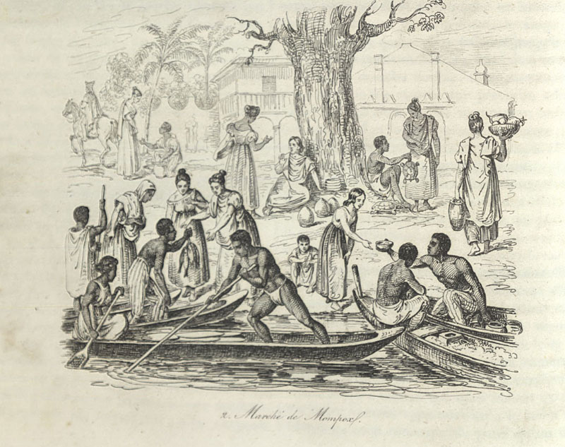
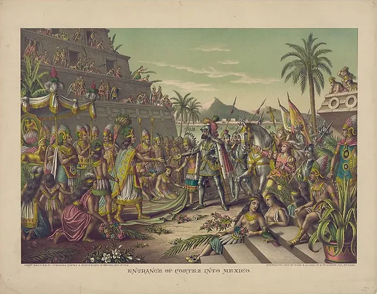

Today, Latin America is predominantly Catholic, a testament to the lasting impact of these colonial endeavors. However, this religious homogenization came at a significant cost to indigenous cultures and religions, many of which were suppressed or completely eradicated. In recent years, there has been a growing movement within the Catholic Church to reflect on its historical role in the colonization of the Americas. Apologies for past injustices and efforts towards reconciliation with indigenous peoples represent a significant shift in the Church’s engagement with its colonial legacy. A notable example of this reflective process is the apology issued by the Jesuit Order for its role in the oppression of indigenous peoples during the colonial period. This apology, while symbolic, represents an important acknowledgment of the past and a step towards healing historical wounds.
Catholic Reflection
Modern Reflection
The Filipino embrace of Catholic rituals, such as godparentage and beliefs about the souls of the dead, reflects the deep integration of Catholicism into their culture. These practices, including the tradition of waiting for deceased souls with candles, illustrate the syncretism of Catholic and indigenous beliefs. This fusion created a distinct religious landscape, where Catholic rituals were adapted to fit local customs and worldview. The enduring popularity of these practices demonstrates the depth of Catholic influence in the Philippines, even as it interacted with and adapted to pre-existing cultural traditions.
Catholic Reflection
Filipino Embrace of Catholic Rituals
The formation of black communities in the context of slavery was significantly influenced by Catholic practices, particularly godparentage or baptismal sponsorship. In the brutal world of slavery, these practices provided a semblance of stability and social structure. Godparentage established complex networks of support, creating bonds akin to family ties. These relationships often transcended biological connections, offering emotional, spiritual, and sometimes material support. This aspect of Catholic practice played a crucial role in community formation, identity, and resistance to the dehumanizing effects of slavery.
Catholic Reflection
Black Community Formation/Family Ties
Figures like Tupac Amaru and Tupac Katari exemplify the complex loyalties of Creoles in the colonial era. Despite their revolutionary activities, they often proclaimed their allegiance to the Spanish king and the Catholic religion. This dual loyalty reflects the intricate relationship between colonial subjects and the imperial power, where political dissent coexisted with a commitment to the prevailing religious and monarchical order.
Catholic Reflection